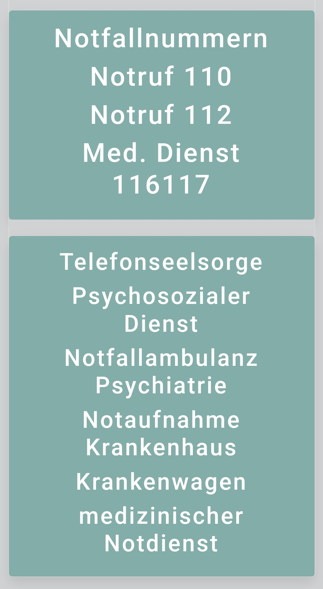

Im Notfall

Direktes Coping
🌿 Körperliche Maßnahmen
- 🌬️ Tief durchatmen an der frischen Luft
- 🚿 Duschen
- 🚶♂️ Spaziergang machen
- 💧 Ein Glas Wasser trinken
- 💊 Magnesium/Vitamin D einnehmen
- 🩺 Blutdruck kontrollieren; Aspirin einnehmen
💭 Mentale und emotionale Unterstützung
- ❤️ Mitgefühl für die Welt entwickeln
- 📝 Gedanken aufschreiben
- 🙋♀️ Um ein Kompliment bitten
- ⏳ Downtime einlegen
- 🤗 Umarmung suchen
- 🍵 Teearoma einatmen
🎨 Aktivitäten und Ablenkungen
- 🎶 Zu einem Song tanzen
- 📵 Handy beiseitelegen
- ✅ Eine Kleinigkeit erledigen
- 📝 To-Do-Liste erstellen
- 🌍 Erdungstechnik anwenden
- 🥙 Snack für die Darm-Hirn-Achse
🚑 Notfallbewältigung
- 💊 Medikamente überprüfen
- 📞 Telefonseelsorge anrufen
- 💊 Neurexan zur Regulation einnehmen
- 💊 Ibuprofen gegen Mikroentzündungen
- 💊 Multivitamin nehmen
- 💤 Schlafqualität überwachen/Powernap machen
Zu Tally Screening
Link